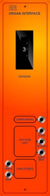

|

for music synthesizers. This module is was created to give me a convenient way to interface the Citation to the synth. From top to bottom there are connections for:
The lower manual output is a mixture of 8' and 4' unfiltered square waves from the lower keyboard of the Citation. The 4' range is switched by the organ's 4' coupler. This signal is amplified by an ETI 3600 synth external input amplifier module, and can then be processed with various synth filters or modulators. The fast clock signal from the organ's rhythm unit is routed straight to the front panel, as well as being fed through a 4017 decade counter, so it can be adjusted as needed. The thumbwheel switch selects the division. The resultant signal is available from the "Divider Out" jack. The third rhythm related output is the downbeat signal, which has been AND gated from a couple of the internal rhythm unit signals. This signal is used to reset sequencers every two bars, so they stay in sync.
The signals from the amplifier inputs are mixed into the organ before the expression pedal, allowing control of all volumes with the expression pedal.
Article, art & page design copyright 1998 by Ken Stone
|